2026 年 9 月 26 日下午，我參加的是臺北市商業處主辦的「2026 漫步艋舺｜南萬華散步：南城再現，加蚋好味」導覽活動。由江仁才老師帶路，從華江高中大門口出發，經西園派出所、公路總局、聚福宮、復興口、東園國小、捷運加蚋站、萬大路，最後走到廣照宮，用兩個小時認識萬華最南邊的加蚋仔。以下是這趟散步的紀錄。
如果說艋舺是台北最早的開埠地，那麼「加蚋仔」便是更早一步扎根的土地。這裡是平埔族語中水流匯集的「沼澤之地」，清代時已是農墾與水圳交錯的景象，是萬華最原初的起點之一。走進艋舺的南側，沒有觀光景點的喧囂，卻藏著滿滿的生活風景：香火繚繞的老廟、老店牆上泛黃的照片，都在訴說加蚋的步調與故事。
加蚋仔是萬華最南邊的農業區，曾以麻竹筍、茉莉花、豆芽菜致富，後來又經歷輕工業與印刷業的興盛。如今捷運加蚋站即將通車，許多老屋、古厝與水路正走向都更，這次走讀記下它們可能的最後樣貌。
出發：華江高中・萬華的北中南
- 萬華由北到南大致分三塊：西門町（最早其實是漢人墳場）、艋舺（商業區，最繁榮）、加蚋仔（農業區）。
- 西藏路以北常被當成艋舺，但其實另有正式名稱「下崁庄」。附近小地名「中原」來自早年的中原染整廠，工人多，形成只有在地人知道的「中原夜市」。
- 西藏路以南就是今天走讀的「加蚋仔」。地名來自平埔族語的「沼澤」——此地原為濕地，平埔族在此耕作、捕魚，漢人沿用其稱呼。
- 古地圖上的「大加蚋堡」另一說指整個台北盆地（康熙年間的「康熙台北湖」退水後成為大沼澤）。但在清代輿圖中，加蚋仔其實屬於「擺接堡」（今土城擺接堡路一帶，信仰中心為土城慈惠宮），清末到日治前不算台北的範圍。
- 加蚋仔三寶：麻竹筍、茉莉花、豆芽菜。茉莉花賣給大稻埕的同安人薰製花茶外銷。
- 這一帶老房子、舊物多已接近都更拆除，「今天可能是最後一眼」。
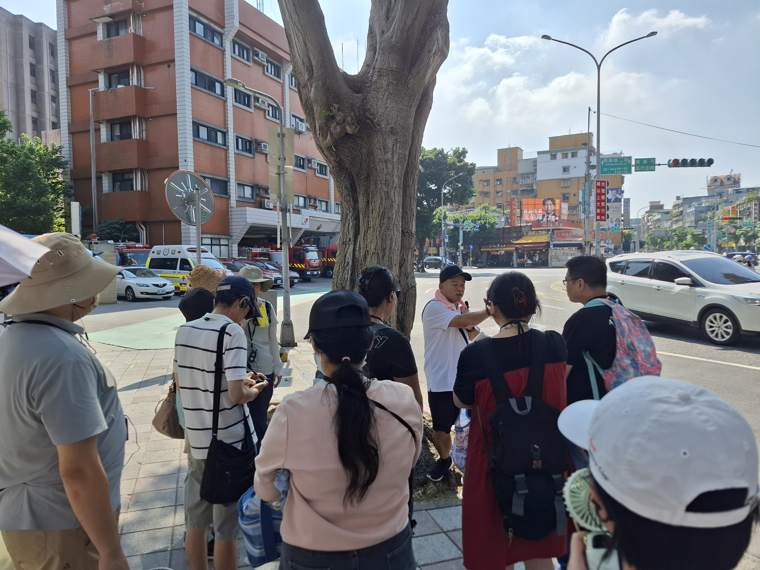
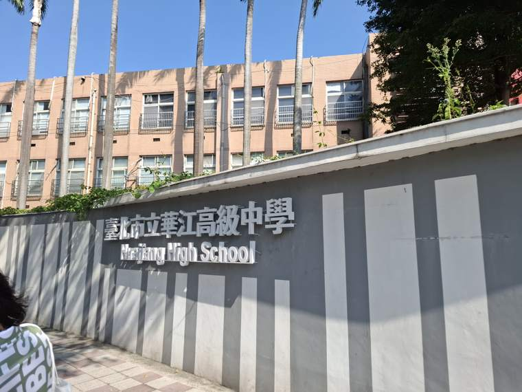
西藏路 S 彎、雙福宮（外土地公）、西園派出所
- 西藏路是一個 S 形大彎道：底下是「特二號排水溝」，原本是天然圳溝，民國五十幾年加蓋成路，底下至今仍有水流，往新店溪方向流。
- 老土地公廟多設在轉角、四方匯集處。土地公管水也管錢。
- 對面的雙福宮：廟門朝向路口，但土地公神像斜斜看向東園街——因為東園街原是田間小路，土地公在看守田園與水路。此廟在地人稱「外土地公」（庄頭最外側），庄內另有「內土地公」。
- 此地舊稱「雙園區」＝東園＋西園，以東園街為界，兩邊都是種茉莉花的花園。有趣的是「西園派出所」其實位在東園街的東園那側，所長表示不想改名。
- 鴻海第一代工廠（約 1974 年）就在附近西園路光復橋下，當時做黑白電視的塑膠旋鈕。
- 西園派出所常處理大型車禍，以前會把撞爛的車擺在門口，被居民抗議後已不再這麼做。
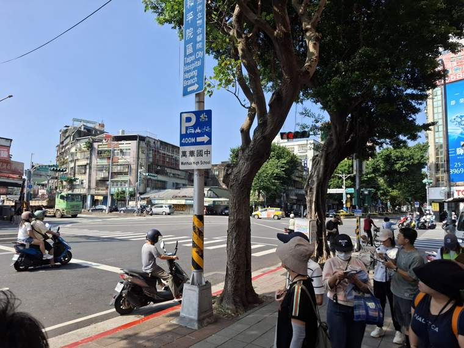
東園街與復興口商圈
復興口商圈藏在南萬華的邊陲角落，市場聲響與巷弄煙火交織出仍在書寫的日常風景。這裡有熟悉的在地滋味，也有新店家進駐，例如以湯頭見長的樂崎火鍋，以及用柴燒窯烤披薩的 Cura Pizza。
- 沿途經過西區少年服務中心（家長上班時可安置孩子讀書寫功課）與東園圖書館（東園街有兩座圖書館，另一座正在都更）。
- 百年前這裡的地價是東區的 4 倍——因為可耕作，茉莉花等作物讓居民致富。
- 致富後的人愛買黃金，東園街全盛時期有二、三十家銀樓，現在約 900 多公尺長的路上仍有十幾家。
- 「復興口」得名自昔日的復興戲院。全盛時期這一帶有三家戲院：復興、大聖、東園。
- 南萬華從農業時代進入輕工業時代：家庭代工、簡單組裝，還有大量印刷工廠——民國五、六十年後的課本很多在這裡印製、裝訂。
- 外地來的年輕勞工需要外食與娛樂，攤販聚集成夜市，戲院也興盛，連板橋、中和的人都來這裡看電影，假日人潮擠到走不過去。
- 後來輕工業外移，印刷廠退休或搬到中和（今中和 Costco 旁的印刷園區）；1992 年前後復興戲院也走入歷史。
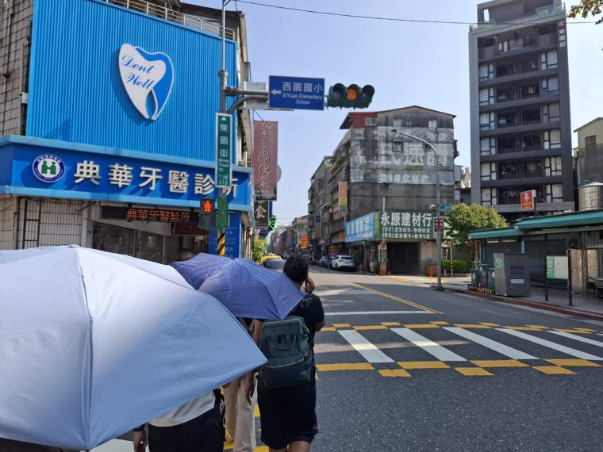
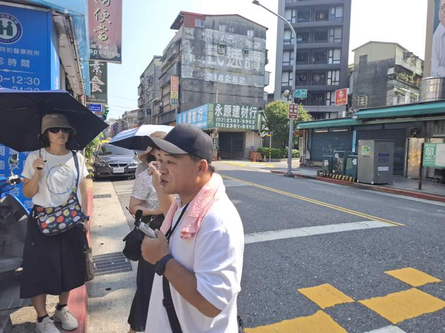
布田花生糖（商圈店家）
- 商業處主辦的活動，介紹在地店家：布田花生糖，主打「不甜」的花生糖，適合怕糖分的長輩。
- 工廠就在店後方，原料產地直送、在地加工；過年的蛋黃酥很搶手，需先電話預約。
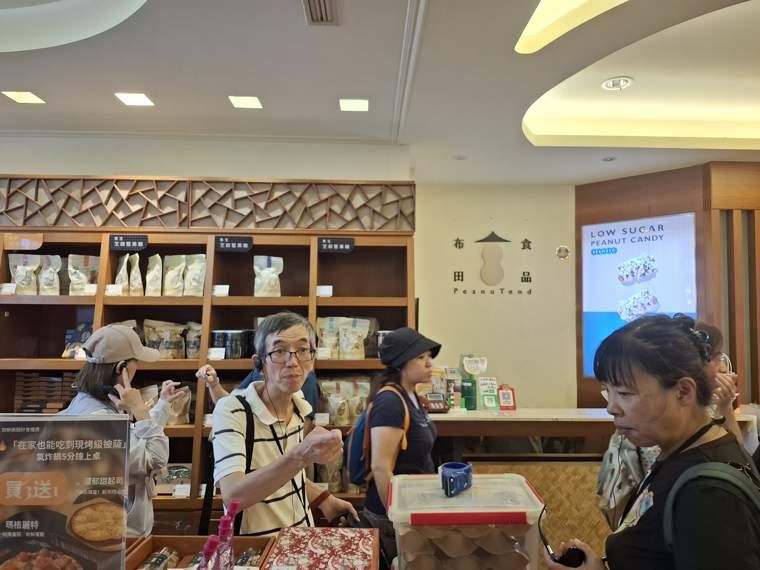
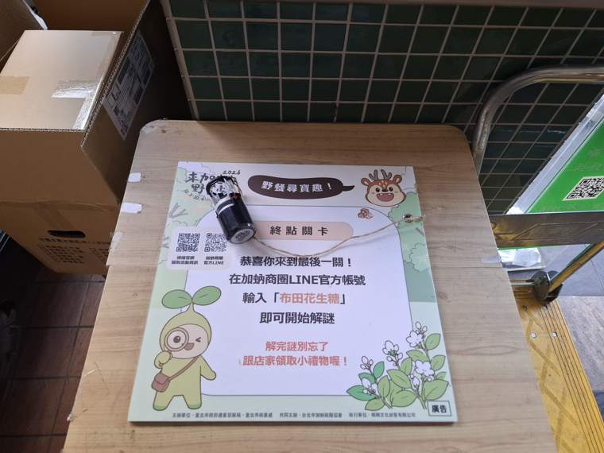
聚福宮（內土地公）與保甲路
這座陪伴街坊百年的土地公廟不大，卻總是香火鼎盛，主祀福德正神。它不只是求財的地方，更像是社區的心靈中繼站。據說聚福宮最早只是茉莉花園間用石塊堆砌的土地公小祠。
- 當天是農曆 8 月 16 日，是一般商家「做牙」拜拜的日子。
- 聚福宮就是「內土地公」，神像同樣斜斜朝向東園街方向，等於替信徒照看田園。
- 保甲路：田與田之間的路不是直的，彎來彎去、底下多是水路（看人孔蓋多不多）。日治時期以保甲制度劃分，保正約等於今天的里長，界線常以這種田間路或水圳來分。
- 廟原本只是路邊小廟，信徒賺錢後越蓋越大。屋頂的剪黏非常精緻但已損壞，不是沒錢修，而是找不到傳統師傅——技藝辛苦、缺乏傳承。
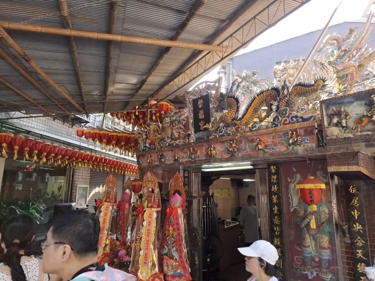
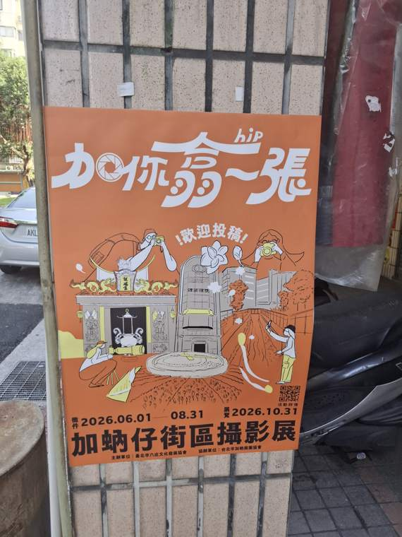
公路總局與日善公園防空洞
這裡曾是公路的心臟，也是全台無數省道、縣道的起點。交通部公路總局的新辦公大樓取得黃金級綠建築標章，結合太陽能板、風力發電與大量植栽；一樓的「幸福公路博物館」保存並展出歷年公路建設的檔案與文物，可以看見公路建設黃金年代的樣貌。
- 公路總局內有展覽空間，展示台灣重大橋樑、高速公路的模型與興建過程；但只在上班時間開放，假日看不到。
- 前身是日治時期的輕航機（滑翔機）製造廠——訓練飛行員要先開輕航機，練好了才能開正式戰機。
- 南機場：台北先有南機場，後有松山機場。南機場以軍用為主，曾短暫有民用航線；松山機場軍民共用、規劃較好，南機場就逐漸廢除。
- 青年公園就是南機場舊址，跑道從青年公園經馬場町一路到新店溪畔。周邊多軍眷，阿兵哥放假來吃東西，攤販聚集成「南機場夜市」；夜市因在中華路以東，行政區其實屬於中正區。
- 輕航機製造廠戰後轉為高速公路局（當年常見國道警察的車在此進出，現在國道警察局與養護單位在泰山收費站旁）。日治時期的輕航機機具送給台北工專，成了航空相關科系的起點。
- 蔣經國擔任退輔會主任委員時，辦公室曾設在這裡（橫貫公路開路的年代），也因此促成榮民印刷廠搬到附近，帶動周邊印刷相關產業聚集。
- 國家考試、大學聯考考卷都交由榮民印刷廠印製：門口站的是持槍的阿兵哥，負責人是軍官，工作人員是退伍軍人。出題老師被關在「闈場」約十天、與外界隔絕，闈場就設在印刷廠旁，印好以蠟封密封送往各地考場。
- 防空洞：二戰時期留下，公家單位的防空洞特別堅固「豪華」，一般民眾的比較簡陋。洞內砌有台北城牆石（日人拆城牆後開放民眾取用）。
- 現已封閉：怕遊民進住、治安問題，內部也有坍塌；設有通風口（原本還有通風管），樹根長大也破壞了結構。曾考慮開放展示，但維護不易。台北現存防空洞很少，其他如四四南村、寶藏巖。
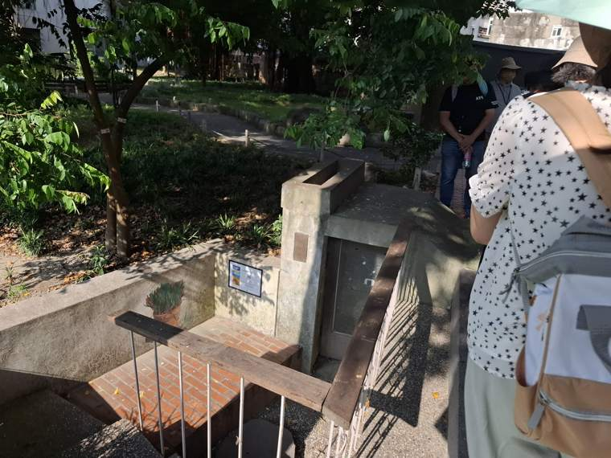
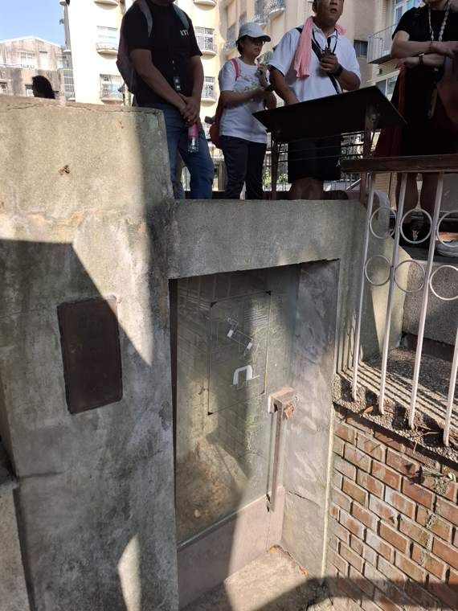
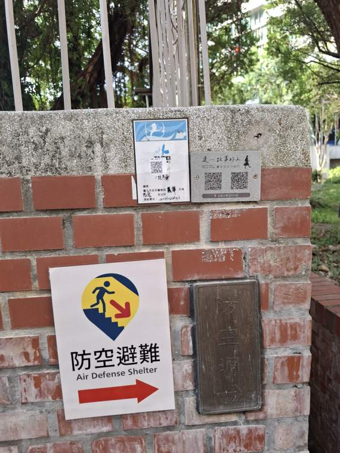
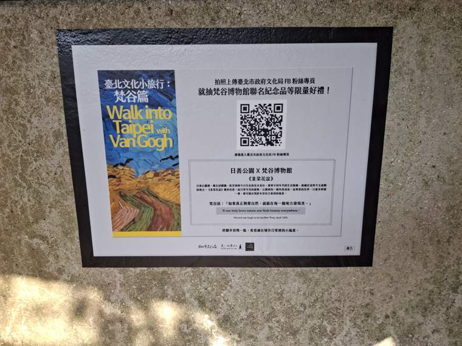
東園街：食衣住行育樂、生老病死
- 日善公園旁的路也是典型保甲路，以前是田間牛車路。
- 萬華都更特別慢：市府政策使老社區難以變更、無法提高容積率，建商沒興趣；南萬華雖是農業區，居民卻很有錢，房子自有、不急著改建。
- 東園街的特色是食衣住行育樂、生老病死樣樣有：有棺木店、做喪事「罐頭塔」的禮品店（三星罐頭禮品），也有電影院和火鍋店。
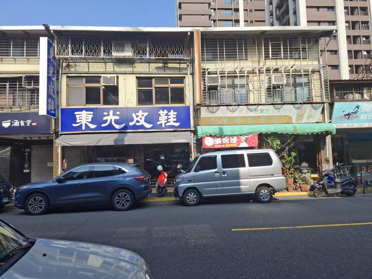
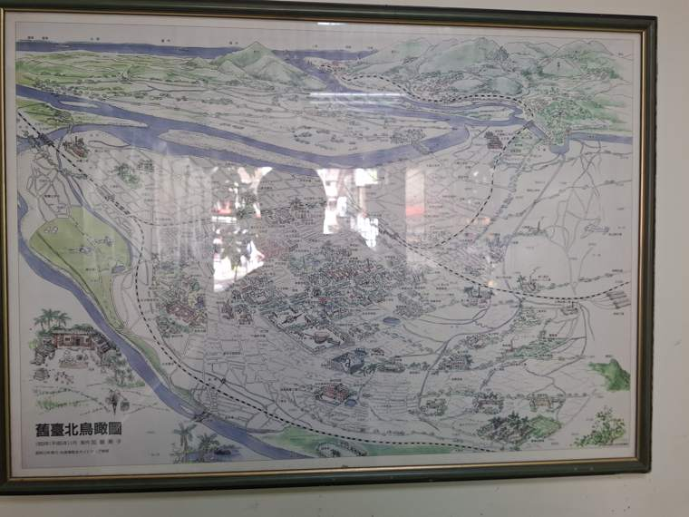
有應公廟與東園戲院舊址
- 有應公廟：咸豐年間的分類械鬥，主戰場從艋舺延伸到河邊，這一帶村莊曾被焚燬。廟裡安奉械鬥中無主的孤魂，以及都更時遷移的墳墓。
- 大家樂盛行的年代，這間有應公廟以「開明牌」聞名，名列北台灣前幾名，香火因此延續至今。
- 東園戲院舊址：以前主要做政令宣導，學校會安排學生來看愛國電影（如黃花崗七十二烈士）。後來沒人看而拆除都更，結果建商跑了，大樓停在半完成狀態，住戶勉強入住、不敢裝潢，官司打了二十多年。
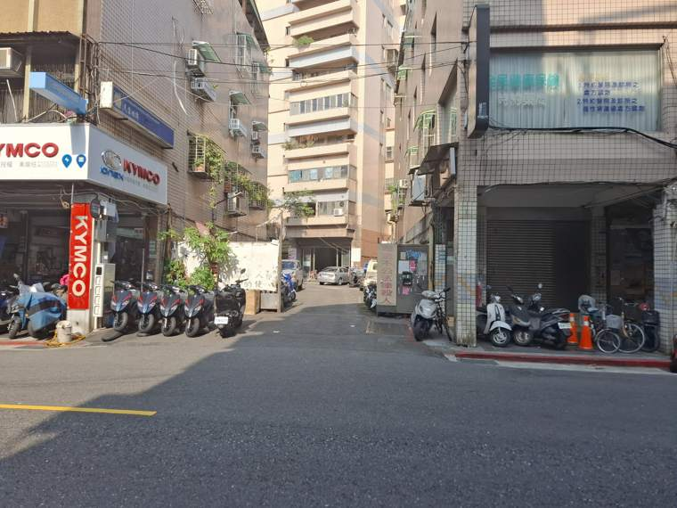
紅磚洗石子老屋與銀樓
- 能用紅磚蓋房子的，在當年一定是有錢人；一段紅磚、一段白色洗石子的配色是很日式的做法。對面許多老屋還有精緻的泥塑立面。
- 俗諺：「加蚋仔人的錢，比牛鞭還粗」——形容種茉莉花致富。
- 銀樓店面多是自有房產、不用付高租金，以前有投資專家推薦來東園街買黃金比東區便宜（但現在金價波動大，僅供參考）。
- 越老的城區越難都更：產權持分複雜，要一堆人簽名、還有人在國外。早年的老農家族多已搬到板橋、中永和。
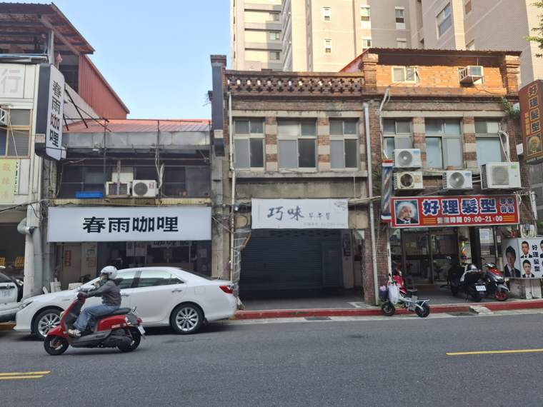
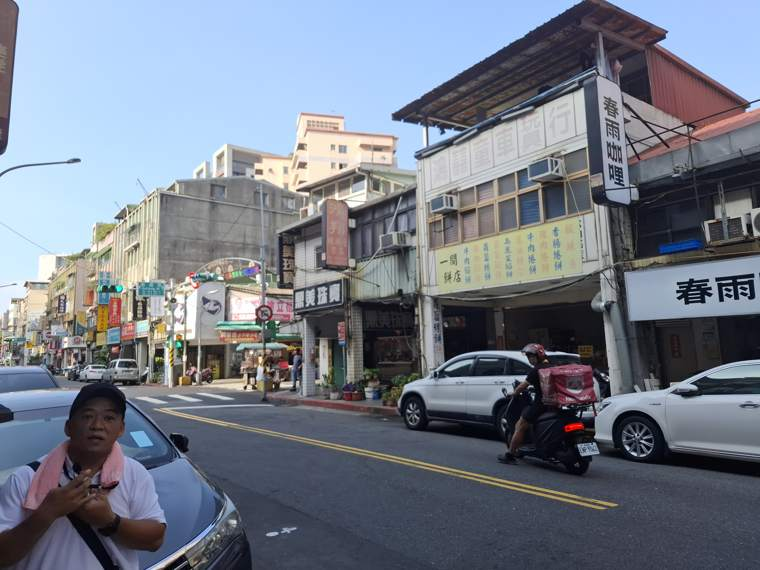
東園國小：少棒冠軍與御大禮紀念樹
- 前兩年東園國小少棒隊拿下世界冠軍，萬華人集資請喝珍珠奶茶，從目標 600 多杯一路加碼到 2,000 多杯。東園國小多次奪冠，不少國手出身於此；台北有棒球資源的學校並不多。
- 東園國小是台北少數百年以上的學校（民國元年創校）。
- 御大禮紀念碑／紀念樹：「御大禮」是日本天皇即位大典。大正天皇即位時，各公家單位、學校都要立碑、種紀念樹。碑立於大正三年，算來已一百多年；樹早已倒下，碑還在。
- 為什麼是大正三年？前任明治天皇過世須守喪三年，期間不辦慶典，滿三年才舉行登基大典（就像雍正其實元年即位、三年才辦大典）。
- 戰後日本遺留的紀念物多被清除，這座碑因藏在樹叢中沒被發現才保存下來。另一種日式校園常見的二宮尊德像，萬華老松國小還保留。
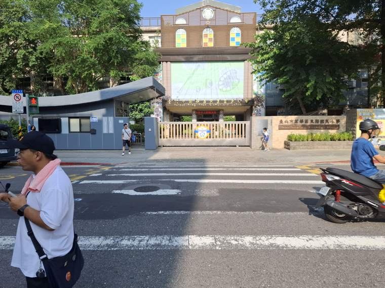
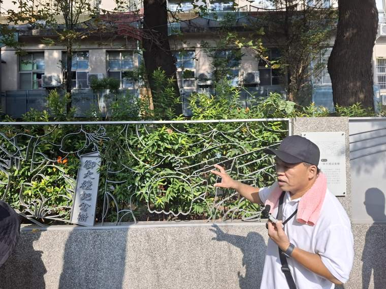
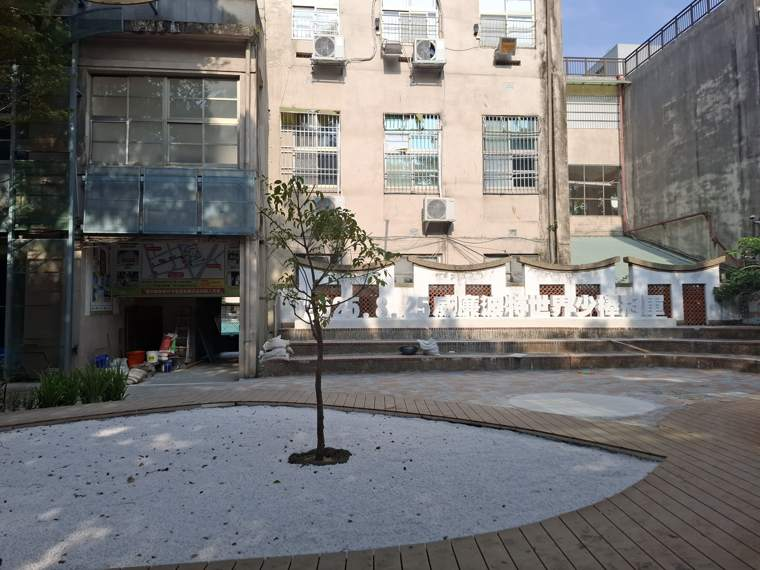
日式教職員宿舍與鄉林建設的都更案
- 這一帶原是日治時期給學校教職員的日式宿舍，很多已不見或被加蓋；空屋時期曾有遊民進住，颱風、火災時有所聞。
- 左手邊整片房子已進入都更：鄉林建設（在台中蓋豪宅起家）買下土地，但因裡面有 300 年的楊家聚落與古井而卡關（約十年前柯文哲首任時期）。建商後來把資金轉投中國，房地產低迷導致資金卡住，這塊地就一直荒著，樹林非常原始。
- 捷運加蚋站即將完工，建商近來大打形象廣告。
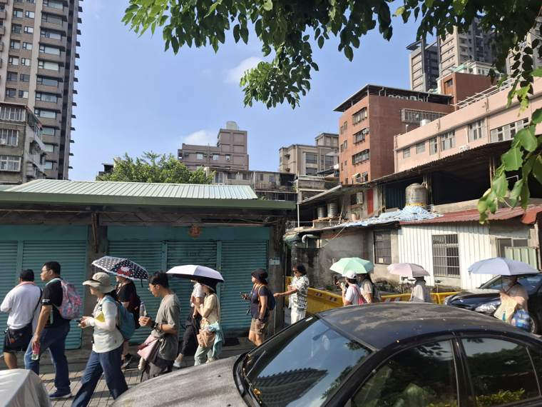
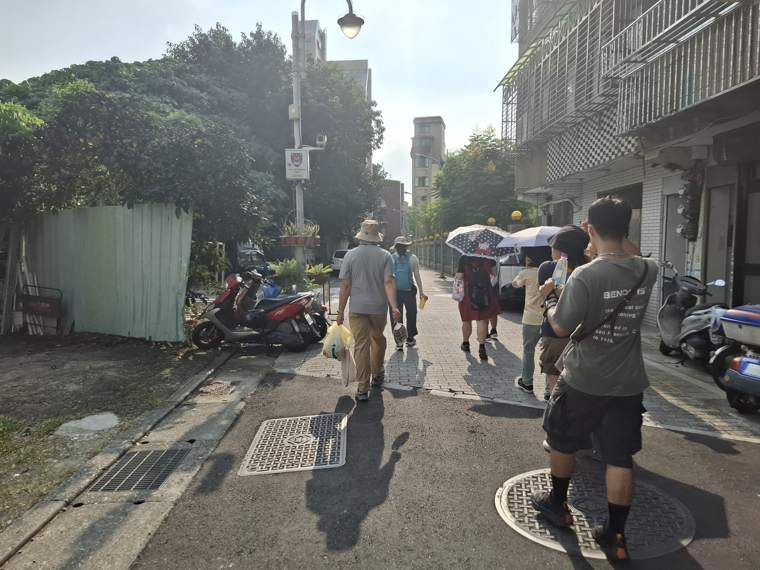
楊聖廟（四知堂）與楊家的故事
- 圍牆上可以看到「四知」字樣。楊家家訓「四知」：天知、神知、我知、子知（東漢楊震的典故），告誡子孫不做虧心事，堂號就叫「四知堂」——掃墓時看到墓碑寫四知堂，大概就是姓楊的。
- 中央 C 位供奉楊家地位最高、當過皇帝的楊堅（隋文帝），底下則有楊家將楊令公（楊業）、楊四郎等。這裡比較像對外開放的廟，而非單純的公媽廳，希望大家都來拜、添香油。
- 楊家是最早來加蚋仔開墾的家族，三百多年，擁有大片土地租給農民種花。
- 畫家楊三郎的父親楊仲佐從這裡搬到永和，是永和首任鎮長，號「網溪老人」（永和網溪國小因此得名），也是 1937 年川端橋（今中正橋）的推動者。
- 1945 年台北大空襲，艋舺龍山寺正殿被炸，楊仲佐出資重修，甚至拆自家房子的柱子給龍山寺當建材，所以龍山寺把最重要的神龕位置留給楊家落款。
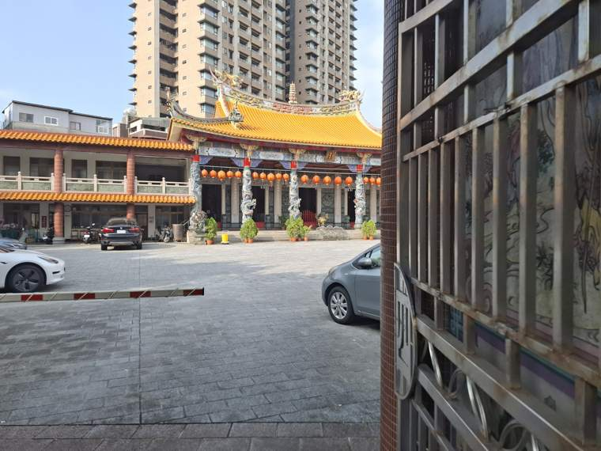
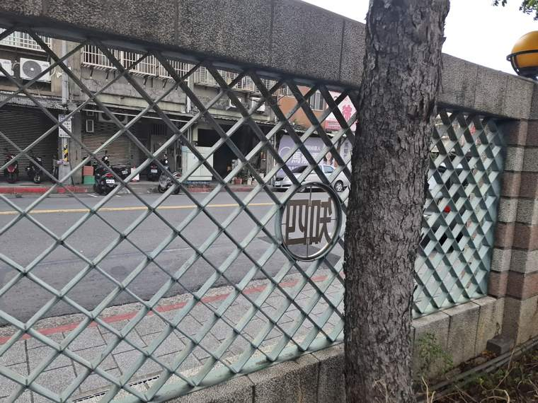
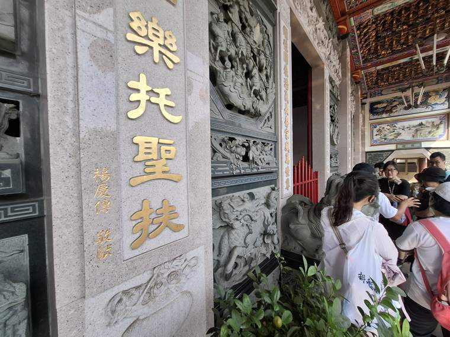
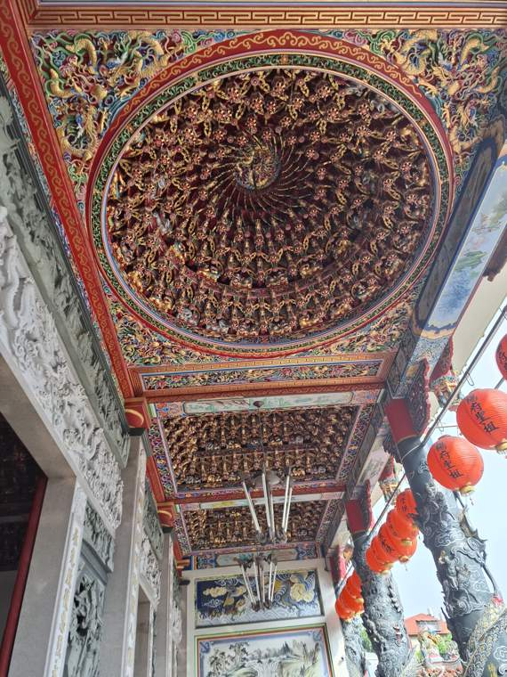
楊家古厝與麻竹筍林
- 楊聖廟後方兩棟大樓是南萬華最貴的房子，一坪曾到七十幾萬、坪數都在 40 坪以上。
- 清朝時楊家蓋的古厝僅存一部分，現在變成資源回收場，其餘已被鐵皮封起。可以看到清代紅磚、民國初年的彩繪，以及「金包銀」砌法——節省材料，也有長輩做暗格藏私房錢，留給家道中落時的子孫應急。
- 這片地也在都更範圍內，「下次來可能就拆了」。
- 旁邊就是加蚋仔三寶之一的麻竹筍林，三百多年來樣貌幾乎沒變。因產權複雜而被「完全冷凍」，成了台北市裡少見的原始林相。以前有一棵大樹可覆蓋整個十字路口，後來被颱風吹倒。
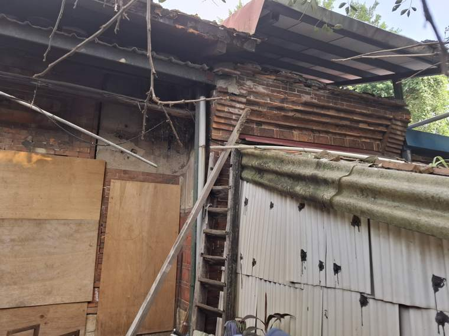
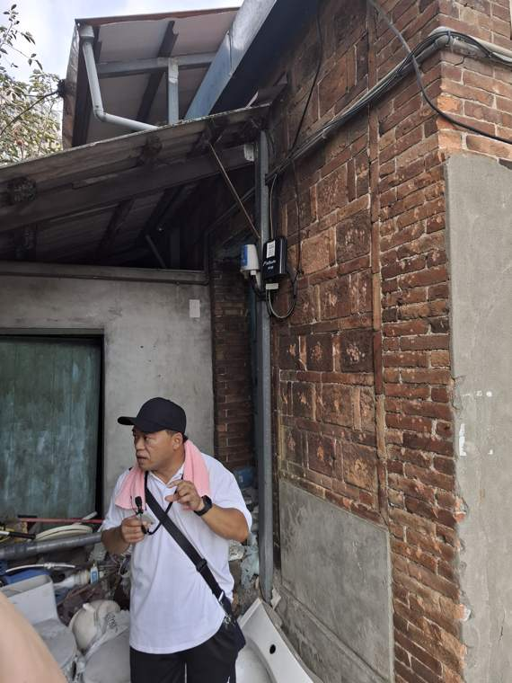
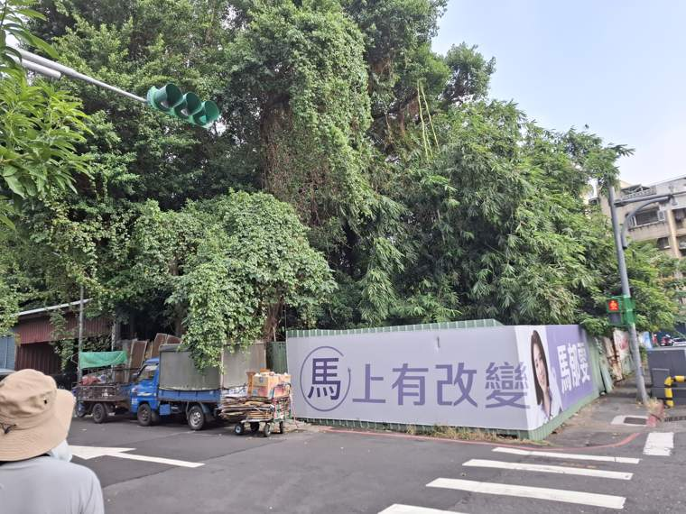
堀仔頭：三百年的水路
- 這個聚落叫「堀仔頭」，「堀」是水池的意思。這裡是灌溉水路的中段，目前查得到的紀錄約 200～300 年，與楊家古井是同一個水系。
- 很多人以為是地下湧泉，其實是新店溪地下的破口，水順著縫隙鑽流匯集到這裡。
- 加蚋仔原分 6 個庄頭，後改成 5 個，庄裡農作都靠這水灌溉；後來轉為工業，水也被利用一些，如今就單純是一條水路。水很乾淨，看得到魚。
- 這一段原本也要加蓋，居民陳情才保留下來當公園。
- 里名多有「德」字（明德里等）：「德」的台語音近「竹」（tik），把當年的產業藏在里名裡。
- 看到特別大的樹，底下通常就是水路。這一帶預計今明年內也會全部消失。
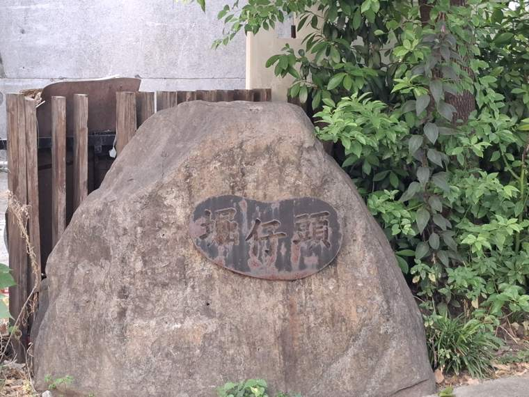
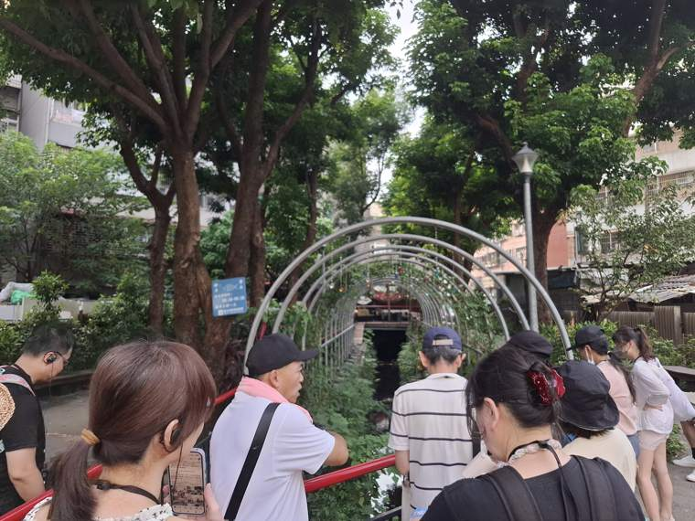
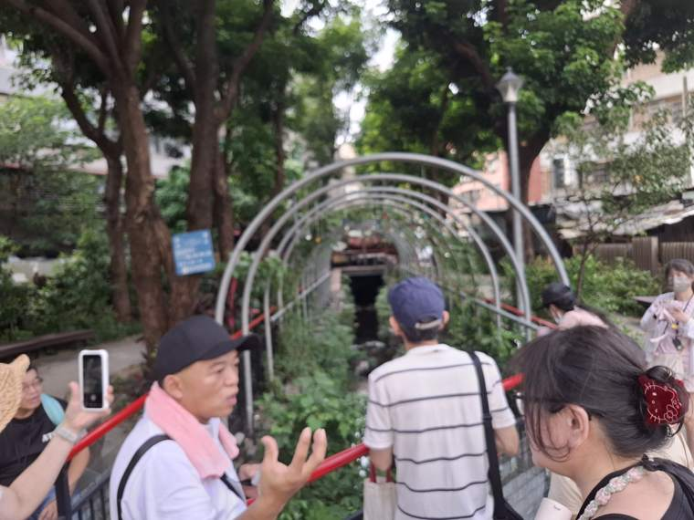
東園派出所舊址・捷運加蚋站
捷運加蚋站是南萬華逐漸浮現的新地標，像一把鑰匙，打開南萬華通往外界的門。這片昔日埤塘低地上的聚落，從清代的水路中繼地轉變為鐵道與街市的交會點，與北萬華串起新的脈動。
- 廢棄的東園派出所：東園街頭是東園派出所、街尾是西園派出所。因捷運工程與要蓋綜合大樓，派出所已遷走。
- 以前的「易春羊肉爐」是南萬華傳奇：入夜後門口並排停滿黑頭車，黑道來吃飯「喬事情」；後來店也搬了，現在附近只剩一棟釘子戶。
- 東園國小創校時萬大一帶還是軍營，軍營遷走後才另設萬大國小，所以兩校很近。曾談合併，但誰當校長談不攏。
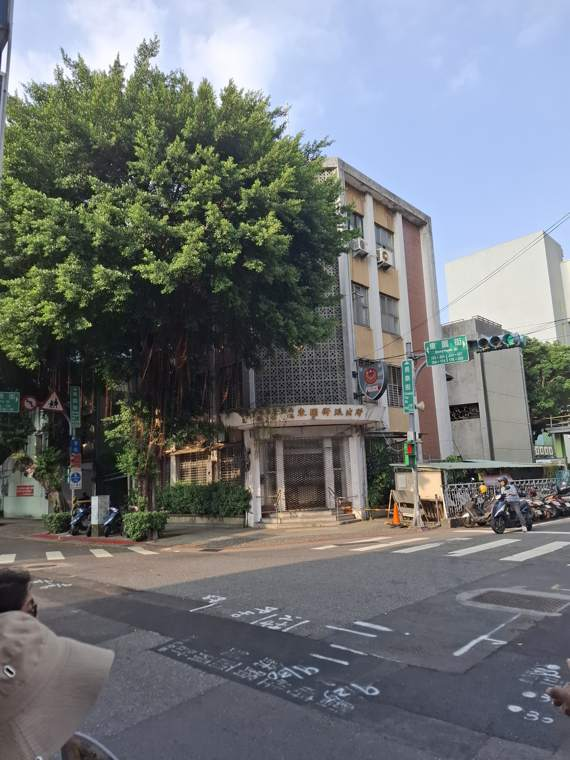
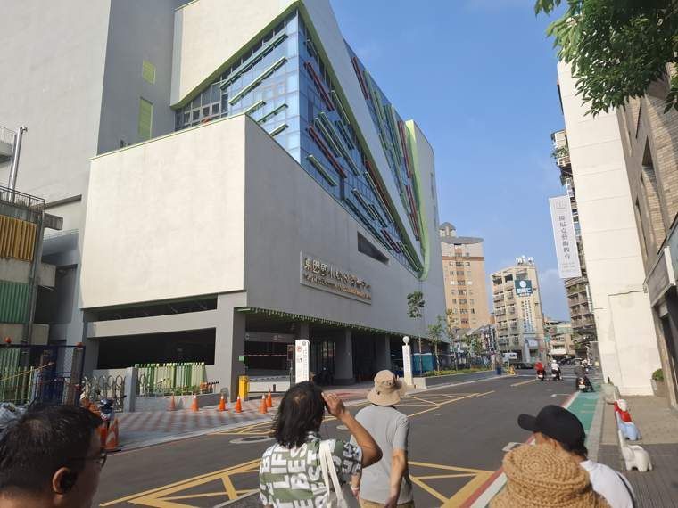
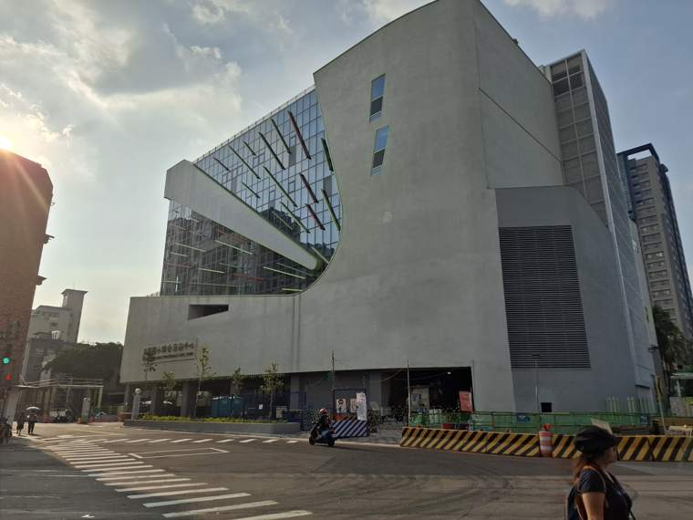
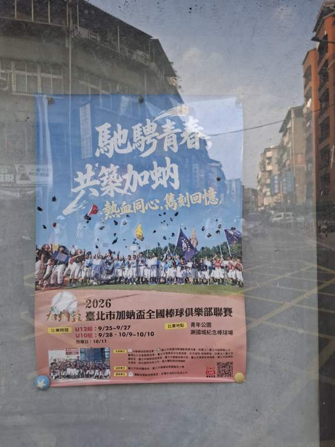
廣照宮：飛天大聖
廣照宮藏在南萬華的巷弄深處，滿布剪黏工藝與青斗石雕，廟前龍柱與石獅莊嚴肅穆。三層樓高的廟宇供奉凌霄寶殿、文昌殿、武財神殿與星君神祇，是加蚋庄的信仰中心。
- 艋舺是三邑人的地盤，加蚋仔是同安人的地盤；同安人的信仰中心是保生大帝（大龍峒保安宮）。
- 飛天大聖（張聖者）是保生大帝身邊的助手，跟著行醫救人，有飛天遁地、聞聲救苦的能力——不是齊天大聖孫悟空！臉是黑的，因為常試藥中毒，形象是黑臉、瞪大眼的醫生。
- 廣照宮是南萬華同安人的信仰中心。匾額的題字人是早年的地方民代。
- 五、六十年代政府窮、民間富，大拜拜流水席花費驚人，政府於是限制拜拜時間、並向廟方募款；廟方便邀請民意代表擔任委員當「門神」。這位民代與艋舺青山宮關係深，青山王遶境因此曾延伸到加蚋仔（半夜兩三點才到），他過世後關係中斷，遶境就不再來。
- 老祖與六尊神像：六個庄頭搶著請老祖回家作客而起糾紛，老祖託夢給一位女信徒，到馬場町新店溪畔撈起一根楠木，刻成五尊神像，加上老祖共六尊，大家就不用搶。後來人口外移，神像四散，現在只剩兩尊：大聖主在這裡，老祖則在附近的天德宮。
- 每年國慶前一天（10/9）是飛天大聖聖誕，有大遶境。郭台銘參選總統時曾來拜票，講起當年在此創業；廟方副主委正是他當年的房東。
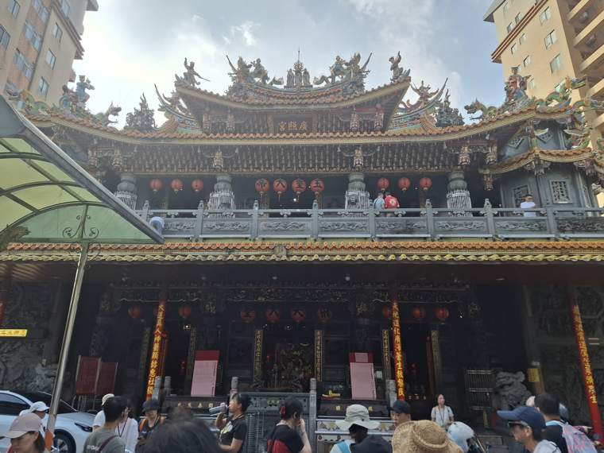
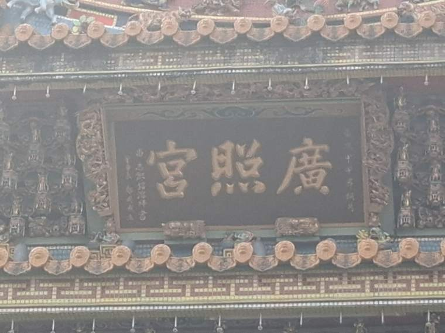
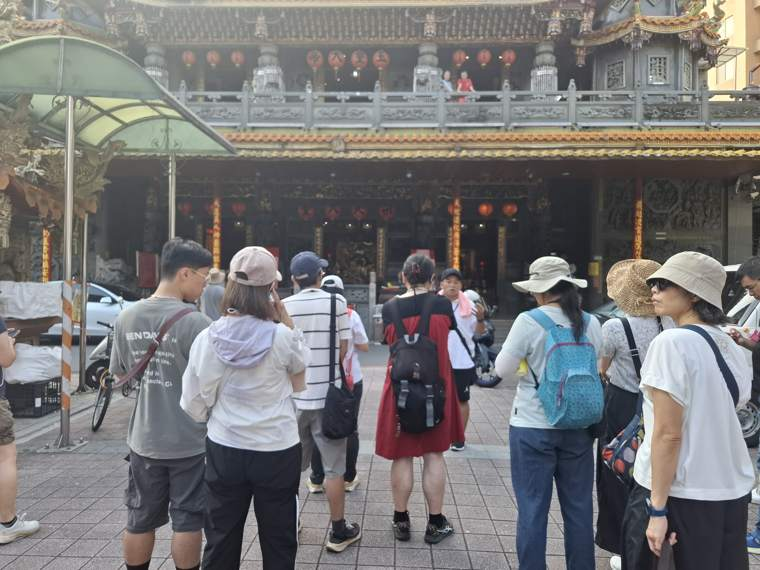
延伸補充
- 飛天大聖老祖在附近的天德宮；廟方寫渡台三百多年（1720 年代），也有一說實際約兩百年，與龍山寺年代相近。
- 茉莉花為何沒落：大稻埕茶葉外銷在戰後最興盛，到民國六、七十年代開始衰退，原因是種茶的人往山上（坪林等）移動。
- 頂下郊拚（咸豐三年）改變台北人口分布：安溪人等移往外圍，許多艋舺人往東區發展，所以今天東區不少大地主祖籍艋舺，景美木柵一帶也多高、張、林姓。
- 大廟辦祭典常被人藉機索錢，所以有些祭典改成多年才辦一次；台北最有錢的廟依序是艋舺龍山寺、大龍峒保安宮、霞海城隍廟。
- 美食推薦：南機場夜市的山內雞肉飯，以及隔壁的冬瓜排骨等。